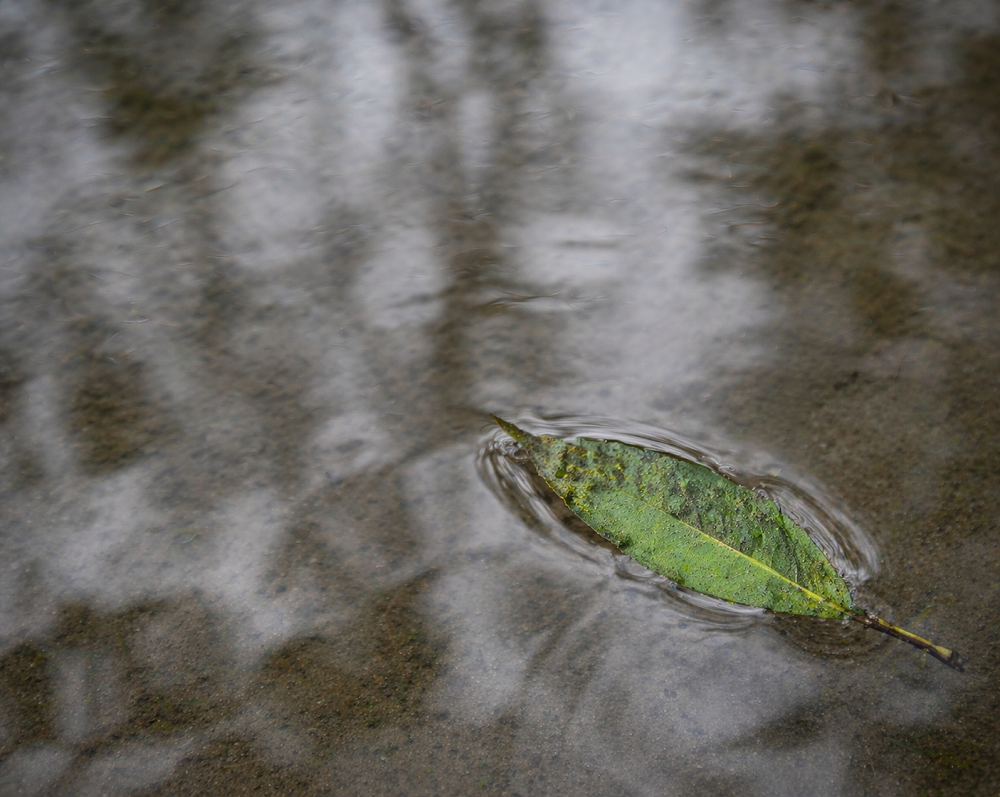

Home > Critical notes > From Quisquiza (04 of 20)
From Quisquiza (04 of 20)
Water
Current Always Finds the Slope
This note is part of a series written from Quisquiza, in the high-Andean cloud forest of Colombia, where ecological restoration and research now unfold side by side. It reflects on how living and working within this terrain gradually reshapes the way I think about memory, information, and the infrastructures built to sustain them. Check all the notes in this section's index.
As expected — that's to say, as all the old traditions stated —, rain season started in Quisquiza. And in the rest of the Andes, I assume. Cycles have this thing of being cycles and taking their job seriously.
And water, I just found out, does not move politely here.
(My clothing could tell you a lot about that.)
After heavy rain, it cuts channels where none existed the day before. Thin lines at first, barely noticeable, then deeper, more insistent, carrying with them soil and whatever they find in their way. In dry stretches, it disappears into the ground without warning, leaving behind no clear trace of where it went. Some areas retain moisture for days, holding it in dark, cold pockets; others shed it immediately, as if refusing contact. A few centimeters of slope decide everything.
Or so it seems, at first.
I have tried to anticipate it. To guide it, even. A shallow trench here, a small diversion there, a stone placed to slow the descent. These interventions hold for a while. Then the rain comes harder, or longer, or simply at a slightly different angle, and the water redraws the map.
Not dramatically. It does not announce itself. But it does not ask either.
What was a path becomes a scar. What seemed contained spreads. What appeared stable dissolves into movement. The ground keeps a memory of these passages, even when the surface dries and hardens again. A few days later, the same lines reappear, as if they had been waiting.
Small variations in flow reshape entire micro-ecologies. Roots follow moisture, sometimes bending in directions that make no sense until you see where the water has been — and you understand. Moss gathers where seepage lingers, of course, thickening quietly over time, greener and greener. Erosion accelerates where runoff concentrates, carrying away what apparently took seasons to settle. Nothing here distributes evenly — why would they? Everything depends on where the water slows, where it accelerates, where it hesitates for a fraction of a second longer than elsewhere.
You learn quickly that directing water is not about force. It is about paying attention to gradient, to inclination, to the almost invisible differences that determine movement. But even attention has limits. You notice patterns, yes, but by the time they are clear, they have already shifted.
Information systems are supposed to behave differently. We design channels, define pathways, assign flows. We build architectures meant to guide distribution, assuming that circulation will follow structure. Taxonomies, metadata schemas, access protocols — these are our trenches and diversions, our attempts to give direction to movement.
Sometimes it works. For a time.
Then accumulation begins in the wrong place. Resources cluster where they were not meant to. Certain pathways become overloaded, while others remain strangely empty. What was designed as a conduit becomes a reservoir; what was intended as an endpoint turns into a bypass. Movement finds its own slope.
Architecture matters. But not in the way we like to think. It does not determine flow so much as it conditions the possibilities of its deviation.
Working with water makes something difficult to ignore. By the time flow becomes visible, it has already been decided elsewhere — in the slope of the land, in the structure of the soil, in the small variations that did not seem to matter when the system was designed. What appears as sudden change is often the delayed expression of conditions that were always there.
Control is not absent. It is simply displaced, distributed across factors that rarely appear in the final diagram.
Yesterday's channel is already dry. The surface has hardened again, as if nothing had passed through it. But a few meters away, a new line is forming, shallow for now, almost tentative.
And you know it will deepen.
(Maybe.)